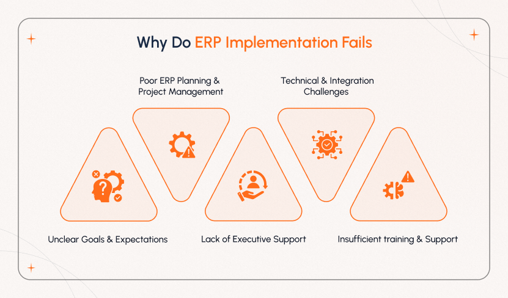
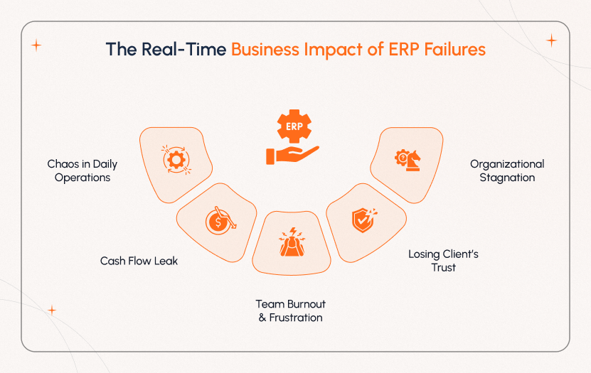
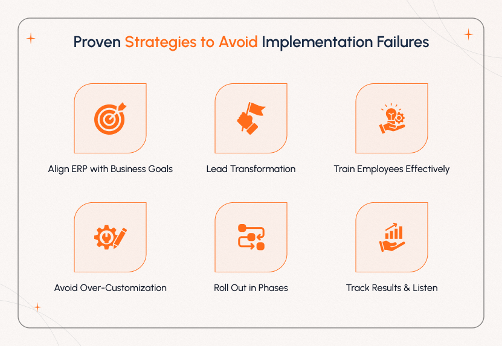
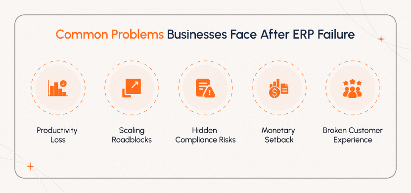
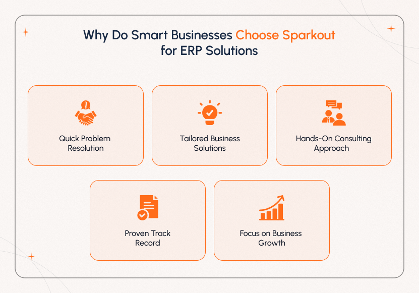

ERP (Enterprise Resource Planning) systems are an effective approach that is supposed to make the workflow easier. Businesses can utilize this to streamline operations, connecting departments, and turning confusion into efficiency. Instead of smelling success, businesses often end up trapped in missed deadlines, frustrated teams, and bouncing budgets.
In reality, ERP implementation failure isn’t just an IT setback, it’s more like a full-blown business headache. Businesses that were already facing this situation know exactly how frustrating it can be.
So, why do these projects often slip away? From poor planning to the team’s miscommunication, pitfalls are in every nook and cranny. Meanwhile, the impact isn’t just limited to a single IT department. It does spread like a wildfire, affecting daily operations, financial performance, and even overall experience of your customer.
In this informative blog, we’re diving into the real-time reasons for ERP projects fail and actionable steps to eradicate the problem and make the next ERP implementation successful.
Why Do ERP Implementation Fails?
The ERP projects don’t just fail out of nowhere. They happen because of the hidden cracks in planning, halfway work, and execution. Here are some of the ERP failure factors that a custom software development company must avoid at any cost.

Unclear Goals & Expectations
Usually, ERP projects will
slip from the start. It reveals its wolf mask when the goal isn’t delivered properly
or teams don't have a clear idea of what they should do. On the other hand,
conflicting visions will always lead to wasted resources and missed deadlines. This
even leads a promising project into unfinished business.
Poor ERP Planning & Project Management
Without having a
proper roadmap in hand, ERP implementations and realistic timelines can quickly lead
to unimagined chaos. On the other hand, ERP project management issues lead to
misallocated resources, delayed critical tasks, and unsolved potential issues.
Lack of Executive Support
To succeed in real-time, ERP
projects need active executive sponsorship. Leadership quality is the major factor
that provides clear direction, allocates resources effectively, and ensures timely
decision-making. The absence of this engagement leads to delayed decisions and
threatens the overall success of the ERP initiative.
Technical & Integration Challenges
In most of the time,
integrating ERP systems with existing legacy systems, customizing the workflows, and
migrating the data are the common challenges faced by a businessperson. Technical
bugs, glitches, and poor integration planning are the primary factors that will
disrupt the ongoing project, no matter how strong the initial strategy is.
Insufficient training & Support
Employees who weren’t trained or supported properly will
struggle to navigate the ERP system effectively. This will lead to technical errors
and user frustration. Continuous training and mandatory support are essential to
ensure the ERP unleashes its full potential.
The Real-Time Business Impact of ERP Failures
If the ERP software system fails, the potential damage can spread rapidly and increase frustration among teams. Here are the real struggles that are faced by a businessperson when ERP fails.

Chaos in Daily Operations
Whenever the ERP crashes or
sputters like a broken engine, teams are forced to spend more time fixing the
problem than actually doing their routine. As a result, the actual orders get
delayed, the inventory doesn’t match, and even simple tasks like approving a
purchase become hectic. At the same time, the system should make things easier, but
teams will end up constantly fixing issues.
Cash Flow Leak
Secondarily, the budget will explode, and
the businessperson will be left questioning each and every penny spent on the
project. The management will keep on bringing in additional consultants, working
overtime, and applying quick fixes, but the reports still don’t match. Moreover,
forecasting will feel impossible as the data is messy and scattered all over the
place. This makes them feel like they’re steering a ship blindfolded in stormy
tides.
Team Burnout & Frustration
At times, employees feel
exhausted and demoralized as they face constant frustration from confusing workflows
and repetitive errors. If this continues, frustration builds among employees, and
even the most talented and motivated individuals will begin to lose interest and
begin to think their efforts don't make any sense. Resulting, productivity drops,
weakens collaboration, and trusted partners are forced to break the bond with you.
Losing Client’s Trust
When ERP starts affecting the
operation, the clients are often the first ones to notice the change. Inaccurate
shipments, delays in delivery, and slow responses will create frustration and will
break the company’s trust and reputation. Losing the client’s trust just because the
system fails to deliver on time is unacceptable and often leaves scars that are hard
to repair.
Organizational Stagnation
When the ERP
system fails to fetch and provide reliable data, decision-making will lag behind.
Without the accurate insights, strategic planning becomes guesswork, and every step
feels hard and risky. This constant cycle of firefighting leaves no room for
innovation and leads to missed opportunities.
ERP Failures in Real World Scenarios: Lessons From Leading Companies
Here are the five real-time companies that actually faced ERP integration difficulties. This section details how they failed and the necessary remedies they took to overcome the ERP implementation challenges.
1. Hershey’s - Missed Halloween Sales
In 1999, Hershey’s
rushed its ERP implementation to go live before the peak of the Halloween season.
Back then, the system was not properly tested, and it does leads to processing
delays and inventory mismanagement.
As a remedy, in post-implementation, they re-evaluated the ERP strategy and focused on through testing and phased rollouts. This strategy in the future ensures stability during the critical sales period.
2. Nike - Supply Chain Disruptions
Nike’s ERP system fails
to manage the inventory effectively. This resulted in mismatch between supply and
demand, leading to overstocking of products and a shortage of others. Due to this,
Nike faced $100 million loss.
After the loss, Nike revamped its supply chain process. They integrate better forecasting tools and foster better communication between departments to regain what they lost.
3. Revlon - Lost Holiday Sales
After they merged with
Elizabeth Arden, Revlon faced business challenges in integrating
its ERP systems. The newly launched system failed to synchronize data between
departments leading to shipment delays and significant loss in holiday sales.
Further, Revlon invested in a complete ERP training program for its employees and worked closely with the consultants to realign the system.
4. MillerCoors - Costly ERP Defects
Back in 2017,
MillerCoors hired HCL Technologies for implementing a unified SAP ERP system. Unfortunately, the
project failed, and they faced numerous defects and delays. This leads to a $100
million lawsuit against the vendor.
The company further reassessed choosing the right ERP vendor and implemented transparent communication in its future projects to restrict similar issues.
5. Birmingham City Council - Financial Overruns
The council
made an attempt to replace its SAP ERP with Oracle. After this, they faced multiple
issues, which include shifting design requests, inadequate project oversight,
resulting in critical functional delays.
To fix this issue, Birmingham City Council reviewed its ERP strategy and began to focus on realistic project timelines to ensure successful future implementations.
Proven Strategies to Avoid Implementation Failures
Implementing ERP systems is a significant investment for any business. In the meantime, the recent statistics reveal that a huge percentage of ERP projects fail to meet the objectives. To rectify these risks, take a look at the ERP implementation best practices followed at Sparkout.

Align ERP with Business Goals
Instead of just looking
impressive, ERP systems must fix real-time business problems. So, start by
identifying the project objective and what your company truly needs. Whether it’s
faster reporting, better inventory control, or smooth operations, each and every ERP
system should connect to these goals.
Lead Transformation
When it comes to ERP, it's equally
about employees as much as technology. A true leader must arise to lead the change
and needs to explain why it matters. Meanwhile, if the management is unsure and in a
dilemma, there’s a chance that the team might resist the new system. So, crisp and
clear communication and visible leadership make the adoption smoother.
Train Employees Effectively
To get a successful output,
proper employee training is essential. Instead of just clicking random buttons,
teams should understand how ERP implementation helps in their daily routine. Make
sure to use practical examples and real-world tasks during the training period to
get maximum efficiency. Well-trained employees will be more dedicated and less
likely to resist the system.
Avoid Over-Customization
Adding too many customizations to
the ERP system brings complications, and it’s also hard to maintain. So, before you
modify the ERP features, ensure that the existing processes can be improved. Because
standard ERP functions always follow the best practices to save time and avoid
future problems.
Roll Out in Phases
Launching the ERP systems all at once
can overwhelm the team and lead to ERP rollout problems. Instead, try rolling the
systems out in different phases. Start launching the system in one department,
followed by others. Following this approach will give you the chance to test out the
system in real-time and ensure everything is running smoothly.
Track Results & Listen
The ERP
implementation doesn’t just stop when the system goes live. You must keep a track of
real business outcomes, like increased efficiency and quicker decision-making, to
see whether the system is delivering value. Also, gather useful feedback from users
and address the issue quickly so that the system stays effective and relevant.
Common Problems Businesses Face After ERP Failure
ERP implementation failure runs deeper than just a software glitch. It does disrupt day-to-day operations, drains morale, and restricts the company’s growth. Here are the common aspects where businesses struggle in the aftermath.

Productivity Loss
Whenever an ERP implementation challenge
occurs, the employees spend a lot of time fixing errors and completing tasks
manually. Tasks that took minutes in the past can stretch into hours. This leaves
the teams exhausted and frustrated over time. Due to this, the deadlines get pushed
off course, and the overall business efficiency will take a serious hit.
Scaling Roadblocks
Businesses that are looking forward to
growing or expanding their branches hit a major roadblock when the ERP system fails.
Due to this, implementing new products, services, and locations becomes more
complicated. On the other hand, competitors with reliable systems move ahead faster
and compete with other companies, leaving your business playing catch-up.
Hidden Compliance Risks
If the ERP data isn’t reliable,
staying compliant becomes much riskier. At times, firms might submit false reports,
miss tax, or overlook main regulatory requirements unknowingly, just because the
system doesn’t show the information precisely. These kinds of errors fly under the
radar until the auditor pinpoints them, which leads to loss of trust and last-minute
panic.
Monetary Setback
If ERP implementation failure occurs, it
directly leads to financial losses. Due to this, the business might end up spending
extra time on emergency fixes, consultants, and employee overtime. All this just to
keep things running without any barriers. On top of that, delays and inefficiencies
will cause a lot of missed opportunities and lost sales.
Broken Customer Experience
Beyond
affecting the business, targeted customers are the ones who often face the
consequences. Over time, common ERP mistakes like inaccurate inventory updates,
delayed orders, and billing mistakes hurt customer relationships and force people
towards competitors. This will potentially affect both revenue and the company’s
image.
Rebuilding Business Confidence With Sparkout’s ERP Expertise
At Sparkout, we actually approach ERP not just as regular software. Instead, we view that as a business transformation tool. Our cross-platform ERP product is specifically designed to streamline operations, unify data, and remove the inefficiencies that will cause potential system breakdowns.
Also, we do work closely with our clients and analyze their ERP implementation challenges. Further, we accordingly customize the ERP modules that align with the real business needs and ensure smooth integration across various domains, including finance, Human Resources, supply chain, healthcare, and education.
Over the years, Sparkout has partnered up with innovative brands like Parkk, Hulo, and Transgenie. During the entire lifecycle, we help them rebuild and optimize their digital ecosystems. Through our consulting, we deliver measurable outcomes that drive operational efficiency and accelerate growth. From rescuing stalled implementations to scaling enterprise operations, our Sparkout’s enterprise solutions empower businesses with clarity and confidence.
Why Do Smart Businesses Choose Sparkout for ERP Solutions
Sparkout helps a wide range of businesses to recover from ERP failures effectively and quickly. This turns dulled projects into smooth and scalable operations. Our strategic approach combines tailored ERP solutions with expert consulting to ensure a lasting impact on the market.

Quick Problem Resolution
As said before, when the ERP
system fails, delays can cost the business heavily. This is where Sparkout steps in
with proven methodologies to identify flaws quickly, fix integration gaps, and
stabilize operations.
Tailored Business Solutions
We don’t just provide solutions
that are generic to all industries. Each and every business runs differently, has
its own goals and issues. Based on that, Sparkout creates ERP solutions tailored to
each company to ensure they solve issues in real-time.
Hands-On Consulting Approach
Beyond just fixing your
project, we do provide hands-on guidance. Our consultants work alongside your teams,
helping them adapt to new workflows and make them understand system capabilities to
make smarter decisions.
Proven Track Record
Our
Sparkout solution has successfully revived ERP initiatives for clients like
Parkk and Hulo. Our experience spans different industries and complex operations,
providing businesses the confidence that we are able to handle business-specific
Enterprise Resource Planning challenges.
Focus on Business Growth
After
observing the businessperson’s point of view, our team at Sparkout focuses on making
the ERP system a growth engine. From enhancing the data visibility to making a
scalable process, we ensure that the ERP system isn’t just functional, but supports
strategic decisions and helps in future expansions.
Winding Up
ERP implementation failures and challenges will feel overwhelming. However, they also present an opportunity to rethink the processes and will strengthen the business foundation. We at Sparkout approach every implementation with a consulting-first mindset, analyzes the pain points, and ensure the system works for the industry and not the other way around.
The true nature of Sparkout’s ERP lies in turning disruption into clarity. By partnering with us, businesses can regain control over operations, enhance team collaboration, and can make smarter decisions. Even after setbacks, implementing the right ERP strategies can transform challenges into competitive advantages.